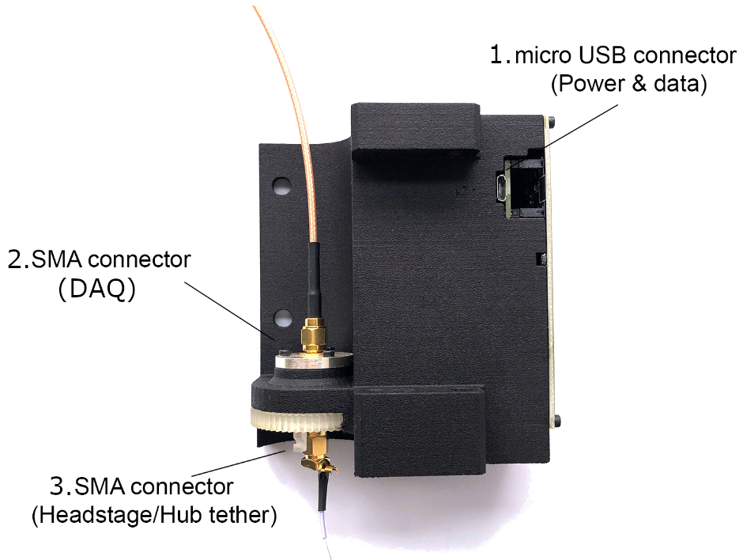
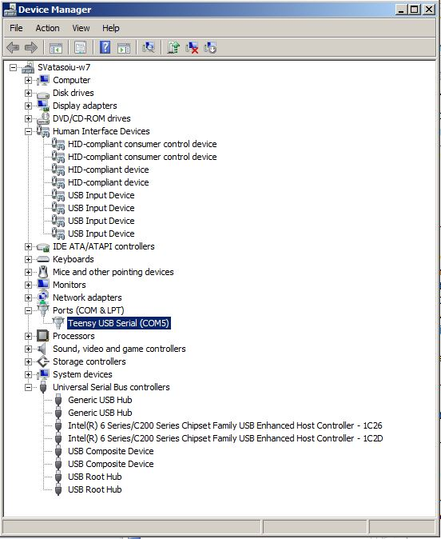
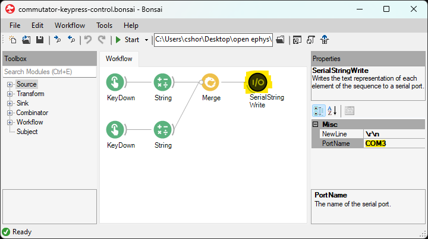

Quick Start#
Important
Although this example uses Bonsai and Windows, the commutator communicates over a serial connection using a simple set of JSON commands and therefore is software and operating system agnostic.
This quick start guide provides a basic setup instructions to verify the commutator’s functionality. By following these steps, you will be able to turn the commutator using keyboard presses from a Bonsai Visual Programming Language workflow.
If you have not already done so,
Open Bonsai and install the Bonsai.StarterPack package
Connect the commutator to the computer to the commutator using micro-USB cable (connector 1 in the figure below) to establish power and communication between the commutator and the computer. For this quick start guide, the coaxial connections are not needed.
Note
The commutator’s RGB LED will flash red when the commutator is plugged in. During this time, the commutator is charging an internal supercapacitor bank that prevents the motor from loading the USB port. This can take up to 30 seconds to complete.
Position the commutator on a table and ensure there is nothing preventing the commutator’s gears from rotating freely.
Download and run the following .bonsai file (also known as a “workflow”) for controlling the commutator using key presses:

 commutator-keypress-control.bonsai
commutator-keypress-control.bonsai
Configure the PortName property of the SerialWriteString node to reflect the port to which the commutator is connected. To determine to which port the commutator is connected to:
Open the Device Manager and expand the Ports directory. The correct port is indicated by the Teensy USB Serial entry as seen as in the below example screenshot. In this example, the correct port is COM5
In Bonsai, click the SerialWriteString node and modify the PortName property (highlighted below) to the value found in the previous step

Run the workflow in Bonsai by pressing the green Start arrow.
Et voilà! The commutator motor now rotates when the left and right arrow keys are pressed on the keyboard.
The angular displacement per key-press can be adjusted by clicking the String nodes and modifying the Value property
To see the JSON commands being sent to the commutator, double-click the SerialStringWrite node during while the workflow is running to show a text visualizer.
After confirming the functionality of the commutator, you are ready to mount it above your behavioral arena and start using it for automated commutation during experiments with UCLA miniscopes and ONIX headstages.